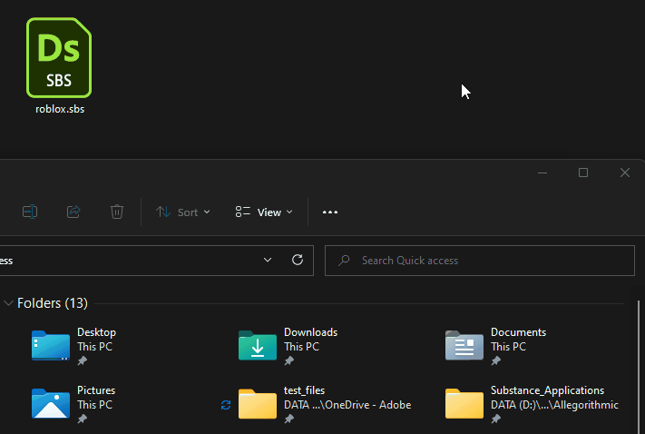
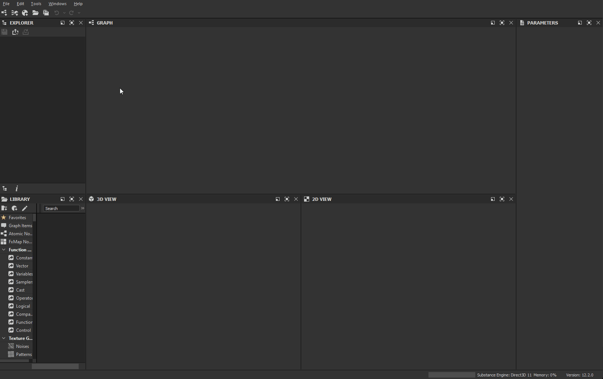
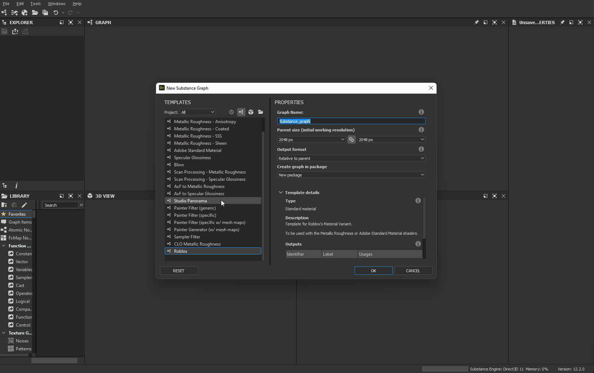

Roblox
Roblox is a platform for immersive, 3D multiplayer experiences. Roblox Studio, the Roblox design tool, supports the PBR Metallic Roughness workflow.
Substance 3D Designer template
To create textures for Roblox, you can use the Substance 3D file below as a Substance compositing graphs template in Substance 3D Designer.
This graph template allows for the pre-configuration of final texture file names and types. This template can be installed and reused to create new materials that always follow the Roblox material guidelines.

Designer to Roblox workflow
Install template
First, install the Roblox template.
- Download the template file linked above.
- Go to Designer's user documents directory:
- (Creative Cloud Desktop)
/Documents/Adobe/Adobe Substance 3D Designer
(Steam)/Documents/Allegorithmic/Substance Designer/ - Create a templates folder.
- Place the file in that folder.

Detect template
Then, have Designer watch the templates folder to look for graph templates.
- In Designer, go to Edit > Preferences...
- In the Preferences window, go to Projects > User project > General
- In the Templates Directories list, click the + button
- Go to the
templatesdirectory and click Select Folder - Click the OK button
- Go to File > New > Substance graph...
- Check that the
Robloxtemplate is listed at the bottom of the templates list in the New Substance graph window

Export textures
Create a graph using the Roblox template and export bitmaps out of that graph once you are done working on a material.
- In the New Substance graph window, select the
Robloxtemplate - Set any identifier and other parameters for the graph and click OK
- Work on your material in the Graph View – see here for getting started with the workflow
- Once you are done, go to Tools > Export bitmaps... in the Graph View toolbar
- In the Export bitmaps window, set a valid Destination path, make sure all the outputs are checked and click Export
- Check the textures are correctly exported to the Destination path

Create material in Roblox
In Roblox, create a Material Variant and assign the textures exported from Designer.
- Select the Model tab and click Material Manager
- Select a material template and click the Create Variant button
- In the Create variant window, set a name for the material
- For each material channel, click the Import button and select the corresponding texture exported from Designer
- Click Save

Apply material
Use your new material variant in your Roblox scene
- Select any part(s) or mesh(es) in your Roblox scene
- In the Material Manager, select your Material variant and click the Apply to Selected Parts button
If the color of the textures look different in Roblox, check the Color attribute under the Appearance category in the properties of the object the Material Variant is applied to, and make sure it is set to pure white – i.e. RGB (255, 255, 255), which is labeled Institutional white in Roblox.

Adjust tiling
The amount of repetition of the material on a surface – i.e., tiling – may be adjusted at any time.
- In the Material Manager, select your Material variant and click the Edit button
- In the Edit Variant window, adjust the value of the Studs Per Tile property under Additional – a lower value results in more repetition